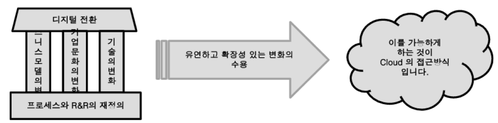
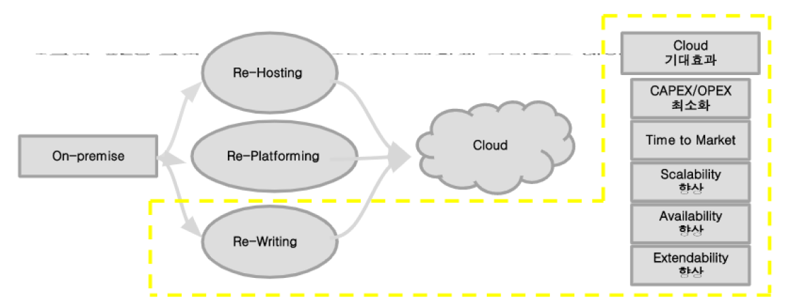
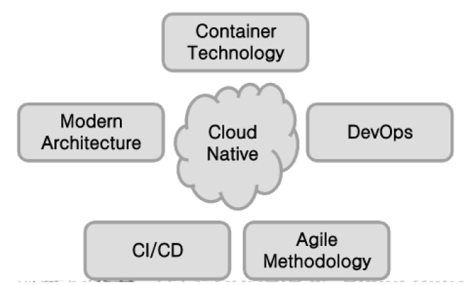
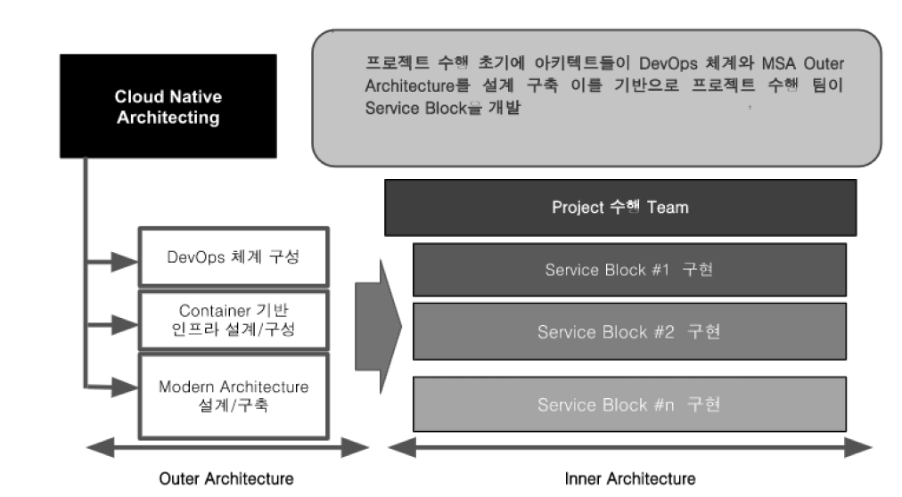

디지털전환과 클라우드 네이티브
< 인사이트
기업의 디지털 전환과 클라우드 네이티브의 부상
디지털 전환이란 기업이나 조직이 가진 문제를 디지털 방식으로 해결하는 것입니다.
기업의 디지털 전환과 클라우드 네이티브의 부상
기업의 디지털 전환과 클라우드 네이티브의 부상 디지털 전환이란 기업이나 조직이 가진 문제를 디지털 방식으로 해결하는 것입니다.
이러한 디지털 전환이 성공하기 위해서는 기술과 비즈니스 모델, 기업문화의 변화가 잘 연동 되어야만 합니다. 이를 위해 기술은 보다 유연하고 확장성 있게 그리고 민첩하게 변화를 수용해야만
합니다. 이를 가능하게 하는 것이 Cloud 의 접근 방식입니다.

이런 관점에서 클라우드는 많은 기업이 디전털 전환에 성공하기 위한 기반인프라로 볼 수 있습니다. 이러한 디지털 전환과
클라우드의 상관관계를 이해하기 시작한 많은 기업들은 최근 시스템을 클라우드로 전환하기 시작했습니다. 클라우드로 시스템을 전환하기 위한 전략은
크게 세가지로 볼 수 있습니다.
첫번째는 기존 시스템을 단순히 클라우드에 마이그레이션 하는 Re-Hosting 입니다.
두번째는 플랫폼 수준에서 리팩토링하는 Re-Platforming 입니다.
세번째는 클라우드에 맞게 어플리케이션 자체를 새롭게 설계하고 구축하여 이관하는 Re-Writing 방식입니다.

이 세가지 방식 중 디지털 전환을 성공적으로 달성하기 위해서는 세번째 방식인 Re-Writing방식을 채택하여야 합니다.
이 세번째 방식을 우리는 클라우드 네이티브라 명칭하고 있으며 기업이 디지털 전환이라는 경영전략을 수행하기 위해 필요한
기술적 유연성과 수용성을 제공할 것입니다. 그럼 클라우드 네이티브의 개념에 대해 보다 자세히 살펴 보도록 하겠습니다.
클라우드 네이티브의 개념와 특징
“Cloud Native”란 클라우드 환경을 처음부터 고려하여 만들어진 어플리케이션 및 시스템을 기존 인프라 패러다임에 따라 만들어진 시스템이나
어플리케이션과 구분하여 부르는 용어입니다. 처음부터 클라우드의 환경을 고려하여 만들어졌다는 것은 클라우드가 가지는 장점을 최대화 한다는 이야기이며,
때문에 클라우드 네이티브는 이를 위한 접근방식이나 기술을 총칭하여 부르는 용어 이기도 합니다.
클라우드 네이티브의 특징은 여러 관점에서 생각해 볼 수 있겠지만, 기술적인 특징과 비즈니스적인 특징으로 구분해 보도록 하겠습니다.
클라우드 네이티브의 기술적인 특징은 첫째, 기존의 방식에 비해 다양한 요소와 기술이 결합되어야 잘 만들 수 있다는 점입니다.
이점은 클라우드 네이티브의 장점을 기업이 인식하더라도 선 듯 이러한 접근 방식을 채택하는 것에 대해 고민하게 하는 점입니다.
컨테이너 기술, MSA와 같은 모던 아키텍처, DevOps, Agile 방법론과 같은 여러 영역의 기술이 잘 오케스트레이션 되어야 합니다.
이를 위해서는 기술 내재화된 전문 인력들이 필요합니다. 둘째, 유연성과 확장성입니다. 외부 환경이나 기술, 고객의 빠른 변화 등에 얼마나 빨리 대처 할 수 있는지
에 대한 이야기입니다. 이것을 가능하게 하는 MSA와 같은 아키텍처를 통해 어플리케이션을 설계하고 구축 운영해야 합니다.
세번째 특징은 자동화된 도구의 활용입니다. 클라우드 네이티브의 접근 방식을 통해 만들어지는 시스템은 기존의 시스템에 비해 노드가 늘어나고 복잡도가
높아집니다. 이러한 시스템을 잘 운영하기 위해서는 자동화된 도구 기반의 운영 요소를 고려한 설계 구축이 같이 진행되어야 합니다.
이러한 개념을 구글에서는 SRE(Service Reliability Engineering)라는 개념으로 이야기하고 있습니다. 클라우드 네이티브의 비즈니스적인 특징입니다.
첫째로 비용 최적화 입니다. 기존 방식으로 만들어진 특히, 복잡도가 높고 규모가 큰 시스템을 클라우드를 통해 운영할 때에는 기업은 생각보다
더 많은 비용을 부담해야 할 수 있습니다. 클라우드의 장점을 최대한 활용하여 비용을 최적화 하기 위해서는 클라우드 네이티브 설계를 통해
사용 자원을 최적화 하고 부분 Scale-Out과 같은 접근 방식을 사용할 수 있어야 합니다. 두번째 특징은 Time to Market입니다.
기업이 원하는 서비스나 어플리케이션을 원하는 시점에 출시 하기 위해서는 굉장히 유연한 시스템을 기반으로 Agility하게 작업할 수 있는 시스템과
개발 환경 및 문화가 필요합니다. 이러한 것을 가능하게 하는 것이 클라우드 네이티브의 접근 방식입니다. 세번째는 변화의 수용입니다.
클라우드 네이티브를 통해 출시된 소프트웨어와 시스템은 보다 빠르게 고객 및 환경적 변화를 수용할 수 있습니다.
클라우드 네이티브를 위한 핵심 요소
클라우드 네이티브가 잘 구현되려면 위에서 말씀 드린 클라우드 네이티브의 특징처럼 여러가지 기술 요소가 잘 오케스트레이션 되어야 합니다.
잘 오케스트레이션 되어야 할 핵심적인 요소는 <그림 3>과 같습니다.

컨테이너 기술은 IT이식성과 유연성을 확보할 수 있도록 합니다. 인프라의 멱등성을 보장하여 안정적인 환경을 제공하고 안전한 배포와 롤백을 가능하게 합니다.
Immutable Infrastructur, code as a infrastructure와 같은 인프라 패러다임이 가능하도록 하는데도 많은 기여를 한 것이 컨테이너 기술입니다.
또 많은 컨테이너를 운영하기 위해서는 컨테이너 오케스트레이션 기술이 필요하며, 현재 이 영역에서 사실상 표준(de facto) 으로 통용되고 있는 기술이 쿠버네티스입니다. Micro
Service Architecture를 통해 확장성 높고 유연하며 스케일링이 유리한 어플리케이션을 설계하고 구축할 수 있습니다.
클라우드 인프라와 MSA를 결합하면 기술적/기능적 변화에 빠르게 대처할 수 있으며, 부분 Scale-out이나 결함 격리가 가능한 기반 구조를 제공할 수 있습니다.
DevOps 체계를 통해 시스템의 구축과 운영과정에서 여러 이해관계자들이 공동의 목표로 전 공정에서 품질과 보안 요소를 적용하여 소프트웨어의 출시 리드타임을 단축 할 수 있도록 합니다.
고도화된 CI/CD체계를 통해 공정을 자동화하고 시각화하여 품질을 보장하며 안전한 배포와 롤백이 가능하도록 합니다.
또한 Agile 방법론은 식별된 타스크에 대해 보다 민첩하게 소프트웨어 개발 작업을 가능하게 하고 이 과정에서 고객과의 협력을 통해
고객 관점의 소프트웨어 품질을 보장할 수 있도록 합니다. 그리고 무엇보다 중요하고 어려운 것은 이러한 핵심 요소 하나하나를 잘하는 것도 중요하지만
모든 요소가 잘 어우러지도록 각 요소에 대해 내재화하고 체계화하여 연계하고 융합하는 능력입니다.<그림 4>는 이러한 핵심 요소들을 잘 연계 하기 위한 Cloud Native 구축 접근
방식을 보여주고 있습니다.

클라우드 네이티브의 기업 비지니스 전략에서의 중요성
비지니스 환경은 매우 빠른 변화에 대응을 해야 합니다. 현재 글로벌 경제, 문화, 기술 환경은 하나의 영향권 안에서 상호작용하며 빠른 변화를 만들어 내고 있고,
고객의 변화 또한 예측할 수 없을 정도의 속도와 변화로 시시각각 변화하고 있습니다. 이러한 환경에 대응하여 기업의 비지니스 모델이 가치를 만들어 내려면
이런 대내외적인 변화에 대해 빠른 대응이 가능한 기반을 갖추고 있어야 합니다. 이런 기반을 갖추게 하는 것이 클라우드 네이티브의 접근 방식입니다.
기존의 방식은 작은 변화는 수용할 수 있지만 보다 큰 기술적, 기능적 변화를 수용할 수 없기 때문에 기업들은 주기적으로 차세대 프로젝트를 수행해 왔습니다.
그리고 대내외적인 변화가 더욱 빨라질수록 기업의 차세대를 위한 주기는 더욱 짧아져 왔으며, 결국에는 엄청난 비용을 투자한 시스템의 사용 연한이
3~5년을 버티기 어려운 상황이 되었습니다. 이러한 문제를 해결할 수 있는 해답을 제시한 것이 바로 클라우드 네이티브의 접근 방식입니다.
클라우드 네이티브의 접근방식을 통해 설계 구축된 시스템은 작은 변화 뿐만 아니라 큰 기술적/기능적 변화도 수용할 수 있으며, 기업의 전략에 따라서는
항상 새로운 변화에 대응되어 있는 차세대가 필요 없는 시스템을 기업이 갖을 수 있도록 합니다.
이런 최신 트랜드에 민감하게 반응할 수 있는 시스템을 가진 기업과 그렇지 못한 기업의 경쟁력은 시간이 흐를수록 점점 더 많은 격차를 만들어 낼 것입니다.
이런 점에서 클라우드 네이티브는 기업 비지니스 전략에서 이미 선택이 아니라 필수 요소로 점점 더 부각되고 있습니다.
금융 비지니스에서의 중요성
기존에 금융산업은 비교적 변화가 적은 환경에서 고도화된 비지니스 모델을 통해서 사업을 수행 했으나 새로운 메가 트렌드의 변화에 따라
금융산업도 빠르게 변화에 대응하고 트렌드에 민감한 대응이 필요한 시대가 되었습니다. 현재 금융산업은 4차 산업혁명의 패러다임과 맞물려
새로운 환경과 고객의 요구에 민감하게 반응하기 위한 다양한 변화를 모색하고 있습니다. 이런 혁신에 대한 트렌드로 다음과 같은 흐름이 확대되고 있습니다.
맞춤형 금융서비스, 신용평가 체계의 고도화, 비대면 금융거래의 확대, 지급결제 수단의 간편화와 다양화, 핀테크 등 새로운 접근방식의
금융 플랫폼 구축 경쟁 본격화. 어떤 기업이 이러한 새로운 금융산업 패러다임에 빠르게 적응하고 트렌드에 맞는 서비스를 할 수 있을 것인가가 아마도
향 후 금융산업의 리더가 될 수 있는 중요한 요소가 되지 않을까? 하는 생각이 듭니다. 금융 산업에서도 기존에 가지고 있는 문제점들을 디지털 방식으로 해결하고
자 하는 디지털 전환의 화두는 여전히 중요하고 고객과 환경의 빠른 변화에 대응하기 위한 노력은 가장 중요한 경쟁력의 원천이 되고 있습니다.
특히, 금융 산업은 차세대 시스템에 대한 투자의 크기가 굉장히 큰 산업분야입니다. 이런 특성을 고려할 때 금융산업에서
고객과 환경의 빠른 변화에 따른 대응을 차세대 프로젝트로 계속 대응하기에는 ROI측면에서 현실적이지 않다는 생각이 듭니다.
이런 문제를 해소하고 핵심 경쟁 요소와 트렌드에 민감한 시스템과 플랫폼을 경제적이고 효과적으로 구축하고 갱신해 나갈 수 있는 금융산업에서의 해법도
역시 클라우드 네이티브라는 생각이 듭니다.
#디지털전환 #클라우드네이티브 #고객경험
공유: (카카오톡, 페이스북, 트위터, 링크복사) | (프린트 icon)


지금, 메가존.디지털에
문의하세요.
프로젝트, 파트너십, 입사지원, 기타 문의가 있으시면
지금 바로 메가존.디지털에 연락하세요.